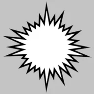
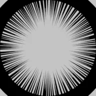
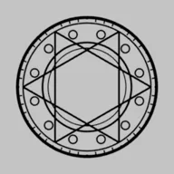
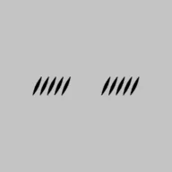
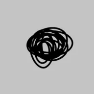
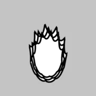
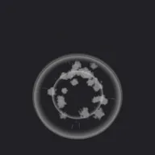
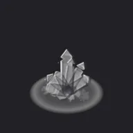
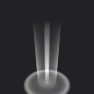

Manga Toon Effects（エフェクト） NEW

MTFX · Geometry Nodes › MTS FX …
エフェクトは全部で 54 種類あり、どれもジオメトリノードで作られています。数値はオブジェクトのモディファイアに出て、サイドバーの「エフェクト」にもロックとキーフレームのボタン付きで並びます。作りで分けると、次の4つのまとまりになります。
サイドバーの種類（効果線・漫符・攻撃・属性…）は「探しやすさ」の分け方、このページのまとまりは「作り」の分け方です。各まとまりの概要図は、代表の1つを例にしています。
画面に描く線 Screen lines
カメラの子になり、画面に対して描きます。カメラを動かしても画面の同じ位置に残り、焦点距離を変えても線の太さは画面上で変わりません。


主な項目（集中線）
| 項目 | 英語名 | 内容 |
|---|---|---|
| 本数 | Count |
線の本数 |
| 線の太さ | Line Width |
線の太さ（1 = 画面の高さ） |
| 太さのばらつき | Width Random |
線ごとの太さの違い |
| 入り抜き | Taper |
内側の端を細く |
| 色 | Color |
線の色 |
| 空白の半径 | Blank Radius |
中心の線を描かない範囲 |
| 長さのばらつき | Length Random |
線の内側の端のばらつき |
| 間隔のばらつき | Angle Random |
線の間隔のばらつき |
| 中心 X ／ 中心 Y | Center X / Y |
線が集まる位置（画面の 0〜1） |
| 奥行き | Depth |
カメラからの距離（前後の重なり） |
| シード | Seed |
ばらつきの模様を変える |
| ボイル間隔（フレーム） | Boil Interval |
N フレームごとに描き直す（0 = オフ） |
漫画の線画 Manga line art
効果線・漫符・描き文字は、白黒の線画（マテリアル MTS FX Ink）です。空間に置き、いつもカメラの方を向きます。線やフチの太さは画面の高さに対する割合なので、カメラから離れても同じ太さに見えます。

ウニフラ
ベタフラッシュ 衝撃線
衝撃線 震え線
震え線
魔法陣 キラキラ
キラキラ
照れ線 汗
汗 湯気（プンスカ）
湯気（プンスカ）
モジャモジャ
オーラ（メラメラ） ？
？ ！？
！？ 音符
音符描き文字だけはテキストオブジェクト
描き文字は Blender のテキストオブジェクトとして入り、ジオメトリーノード（MTS FX Manga Text Warp）でワープを掛けます。カメラの方を向く設定はなく、向きはふつうのオブジェクトの回転で決めます。使い方は 機能ガイド › 描き文字 にあります。
主な項目（共通）
| 項目 | 英語名 | 内容 |
|---|---|---|
| 線の太さ | Line Width |
線の太さ（1 = 画面の高さ） |
| 色 | Color |
線の色 |
| 中の色 | Fill Color |
塗りの色（塗りのある漫符） |
| フチの太さ ／ フチの色 | Edge Width / Color |
塗りのまわりのフチ |
| カメラの方を向く | Face Camera |
オフ = オブジェクトの向きのまま |
| 大きさ | （拡大縮小） |
オブジェクトの拡大縮小で決まる |
ゲーム風 VFX Game-style VFX
Unity や Unreal Engine のパーティクルと同じ考え方で、1つのエフェクトをいくつかの層（閃光・火花・リング・煙…）の重ね合わせで作ります。層はカメラを向く板の群れか、リング・弧・柱などのメッシュです。時間は「進み具合」スライダー（0〜1）で、予兆 → 発生 → ピーク → 余韻 → 消える、と進みます。キーフレームを打てばアニメーションになります。
 ヒットスパーク
ヒットスパーク 斬撃
斬撃 稲妻
稲妻
衝撃波リング
氷の結晶 電撃の玉
電撃の玉
聖なる光 チャージ
チャージ オーラ
オーラ 煙・土煙
煙・土煙 地割れ
地割れ 水しぶき
水しぶき 範囲予告（扇）
範囲予告（扇）主な項目（共通）
| 項目 | 英語名 | 内容 |
|---|---|---|
| 進み具合 | Effect Progress |
0 = 始まり、真ん中でピーク、1 = 消える |
| 大きさ | Size |
エフェクト全体の大きさ |
| 色 ／ 2番目の色 | Color / Secondary Color |
光・火花の色 ／ 煙・破片・影の部分の色 |
| 明るさ | Intensity |
光る部分の明るさ |
| 加算の光 | Additive Glow |
1 = 光を足す、0 = ふつうの半透明 |
| シード | Seed |
ばらつきの模様を変える |
| コントラスト ／ 明るさ | Contrast / Brightness |
色の白黒の強さと明るさ |
| 輪郭の硬さ | Hardness |
高いほど漫画のようなくっきりした形 |
| ドロップシャドウ | Drop Shadow |
明るい背景でも見えるように、後ろに暗い影 |
| 影の色・濃さ・ずれ・広がり | Shadow Color / Opacity / Offset / Spread |
ドロップシャドウの見た目 |
| 外側の光彩 | Outer Glow |
オン = ずらさずに周りを光らせる |
| 続くエフェクト（炎・オーラ・バリアなど）は、進み具合 0 → 1 で何回かくり返します。 |
墨・筆 Ink & brush
墨は光りません（加算なしのふつうの半透明）。色の初期値は黒で、描き終わっても紙に残るので消えません。筆の形はシェーダーで作り、ふちのがさつき・毛の筋・かすれ（筆の終わりほど強い）が出ます。


主な項目（筆跡）
| 項目 | 英語名 | 内容 |
|---|---|---|
| 進み具合 | Effect Progress |
筆が走る途中（0 → 1） |
| 墨の色 ／ 墨の不透明度 | Ink Color / Ink Opacity |
墨の色と濃さ |
| カメラの方を向く | Face Camera |
オフ = オブジェクトの向き |
| 筆跡の形 | Stroke Shape |
0 = S 字、1 = 円相、2 = 直線 |
| 長さ | Length |
ストロークの長さ |
| 筆の太さ | Brush Width |
筆の太さ |
| 入り ／ 抜き | Taper In / Out |
太くなるまでの長さ ／ 細く抜けていく長さ |
| かすれ | Dry Brush |
かすれ（筆の終わりほど強い） |
| 手ぶれ | Wobble |
手の揺れ |
| しぶき | Splatter |
筆から飛ぶ小さな墨の粒 |
| 回転 | Rotation |
ストロークの向き |
| パスで描く | Use Stroke Path |
編集できるパス（ベジェカーブ）に沿って描く |